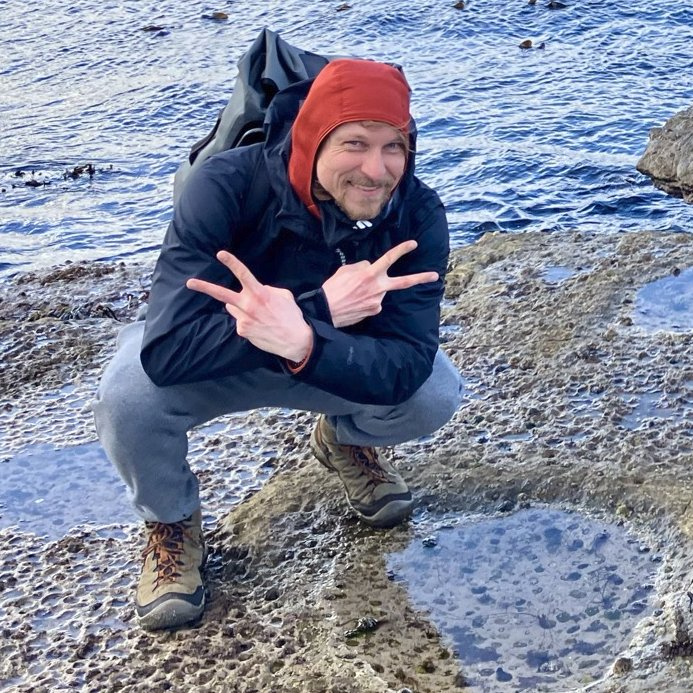

Backend & Distributed Systems
Async Python services, event-driven architectures, cloud-native deployments.
What I do
Async Python services, event-driven architectures, cloud-native deployments.
Working with collaborative and industrial robots since 2021. Edge-cloud sync, robot programming languages, infrastructure for real hardware.
GLSL, HLSL, OpenGL, WebGL. Procedural shaders, post-processing, generative visuals.
CLIs, automation, build systems, dotfiles. Small tools that remove friction.
Selected work
A large collection of experiments, snippets, and showcases across many languages.
Static cooking recipe blog with filtering, categories, and zero backend.
Personal curated lists of Python tools, reads, and other good things. Markdown built to static HTML by a shell script.
HTML/CSS/JS based tile image viewer for browsing large image collections.
A playground of WebGL experiments — soap bubbles, perlin wobble, lava balls, disco towers.
Whisper-, Kokoro-, and OpenCode-powered voice chat agent CLI. Speech in, speech out.
Vibe-coded endless 3D falling game, inspired by LEGO City Undercover.
Desktop file browser for Linux (and probably macOS), built on top of dmenu. My most popular open-source release.
Open-source SDK for the Wandelbots Nova robot platform. Async Python, multi-vendor robot abstractions. Co-authored and maintained.
C++ implementation of the OPTICS density-based cluster ordering algorithm. From my master’s work.
Simpler companion to the OPTICS work above.
Unsupervised detection of salient regions in image databases. First use of OPTICS for a CV problem.
3D user interface to control a real smart home, built at DAI-Labor, TU Berlin. UI, composition, 3D modelling. In German.
More on github.com/langenhagen.
Where I worked
A bit about me

Hi, I’m Andreas. Software engineer in Berlin. Started in computer graphics, drifted into backends and distributed systems, lately working on industrial robots.
I care about people, processes, and code the next person can read. Outside of work I tinker with shaders, small CLIs, and the occasional vibe-coded game.
German native, English working language. Mostly Python and Kubernetes these days, with C++ that’s rusty but still there.
Outside of computers: running and basketball are the sports I love. The rest of my free time goes into crafting and playing the guitar.
Get in touch
Email: andreasx7q [at] k3zlangenhagenm9p [dot] v2ncc
linkedin.com/in/andreas-langenhagen
github.com/langenhagen
Berlin, Germany